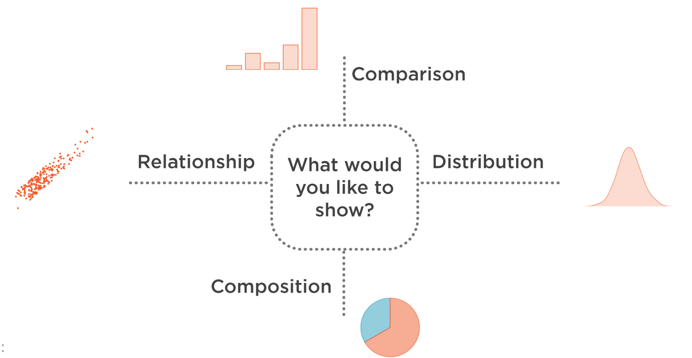

Análisis exploratorio de datos
Contents
Análisis exploratorio de datos¶
Definición¶
El análisis exploratorio tiene como propósito el resumir las principales características de los datos, frecuentemente, se utilizan gráficas para ello. Este proceso aumenta la comprensión del dominio del problema, ya que nos ayuda a identificar la naturaleza de los datos (cuantitativa - contínua, discreta, cronológica; cualitativa nominal, categórica), ver su calidad e identificar si existen correlaciones entre ellos. Con esta información se pueden realizar hipótesis sobre relaciones causa y efecto, o como reemplazar variables faltantes, si es que existiesen.
Maneras de analizar los datos¶
Se pueden analizar los datos de maneras diversas, como las que se ven a continuación. En este curso sólo se verán las primeras dos formas.
Análisis unidimensional¶
Es la manera de analizar a los variables individualmente, ver sus características y naturaleza. Por ejemplo, si tenemos un conjunto de datos que contienen la edad, el peso y el sexo de una persona, podemos conocer el promedio de las edades, o la simetría del peso, entre muchas otras cosas.
Análisis multidimensional¶
Reducción de la dimensionalidad (factor analysis)?¶
Agrupación de datos (identificar grupos/clusters de observaciones similares)?¶
En esta manera analizamos multidimensionalmente a las variables, es decir, análizamos las relaciones y caracteŕisticas entre dos o más variables. Por ejemplo, siguiendo el ejemplo anterior, utilizando un análisis multivariable podemos determinar cuál es la correlación entre la edad y el peso de una persona.
Tipos de visualizaciones¶
Para saber como elegir de manera apropiada qué gráfico debemos elegir, recomiendo ver la infografía Chart Suggestions—A Thought-Starter de A. Abela. Para visualizar los datos, podemos utilizar varios tipos de gráficos, como:
Tendencia central y dispersión
Este tipo de gráficos muestran, como dice su nombre, la dispersión de los datos así como cual es la tendencia crentral hacia la cual los datos tienden. Ejm: Gráfico de distribución
Comparación
Estos gráficos sirven para comparar los valores de los datos unos con otros, por ejemplo, ver cuál es la proporciones de las personas con 20 años con respecto a las de 70 años. Ejm: Gráfico de barras
Relación - lineas, scatter plots
Los gráficos de relación nos muestran, como dice su nombre, la relación entre dos variables. Por tanto, este tipo de gráficos sólo se puede aplicar a varias variables (análisis multidimensional). Ejm: Gráficos de líneas, Scatter Plots.
Composición/Proporción
Estos gráficos sirven para ver la proporción de varias variables con respecto de otras. Ejm: Grafico de torta, Gráfico de barras apiladas.
